Všechna ovládání jsou uvedena ve vychozím nastavení, ovládání pro ovladač je uvedeno pro ovladač PS4
Jízda
S autem se pohybujete dopředu nebo dozadu, zatáčíte vlevo nebo vpravo
PC: W, S, A, D
Ovladač: R2, L2, Joystick 90°/270°
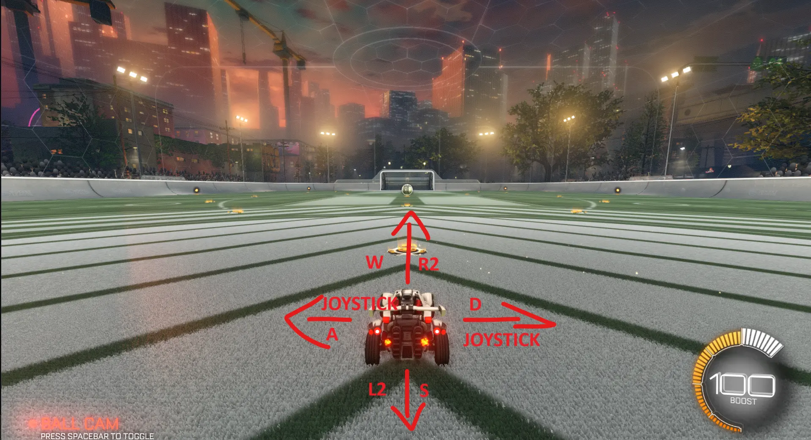
Skok
S autem je možné i skákat, se vymršťí to určité výšky a po chvíli spadne zpět na zem.
Čím déle držíte skok, tím výše vyskočíte (určena maximální výška)
PC: Klik PM
Ovladač: X
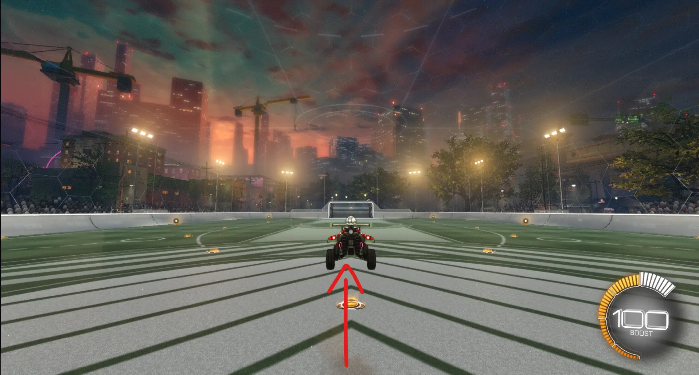
Dvojitý skok
Dvojitý skok (neboli double jump) vám dovolí vyskočit výš než samotný skok.
PC: Dvojklik PM
Ovladač: Dvojklik X
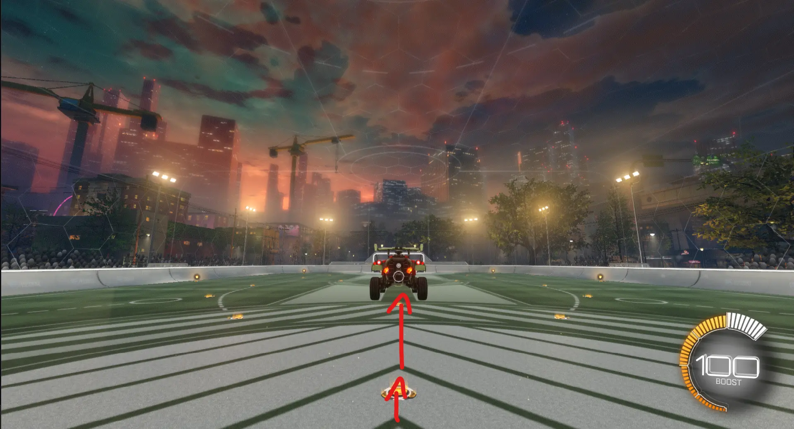
Boost
Boost vás zrychluje vpřed do maximální rychlosti.
Můžete ho používat během všech mechanik.
V pravém dolním rohu obrazovky (žluté kolečko) je zobrazen ukazatel zbývajícího boostu. Boost si doplňujete pomocí tzv. padů.
Malé pady (v oranžových kolečkách) přidávají 13 boostu. Velké pady (v zeleném kolečku) doplní boost na max (t.j. 100)
PC: Klik/Držení LM
Ovladač: O
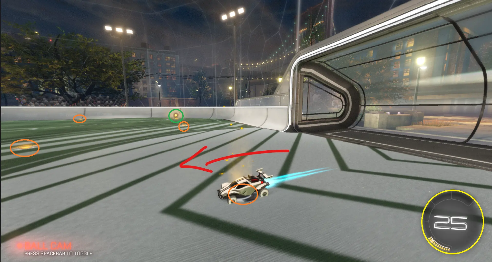
Po začátku flipu nelze změnit směr. Musíte počkat na dokončení animace
Frontflip
Frontflip vás zrychluje ve směru jízdy vpřed
PC: W+Dvojklik PM
Ovladač: R2+Dvojklik X
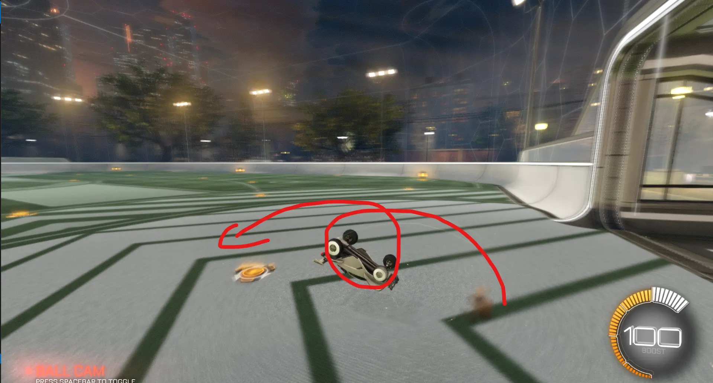
Backflip
Backflip vás zrychluje ve směru jízdy vzad.
PC: S+Dvojklik PM
Ovladač: L2+Dvojklik X
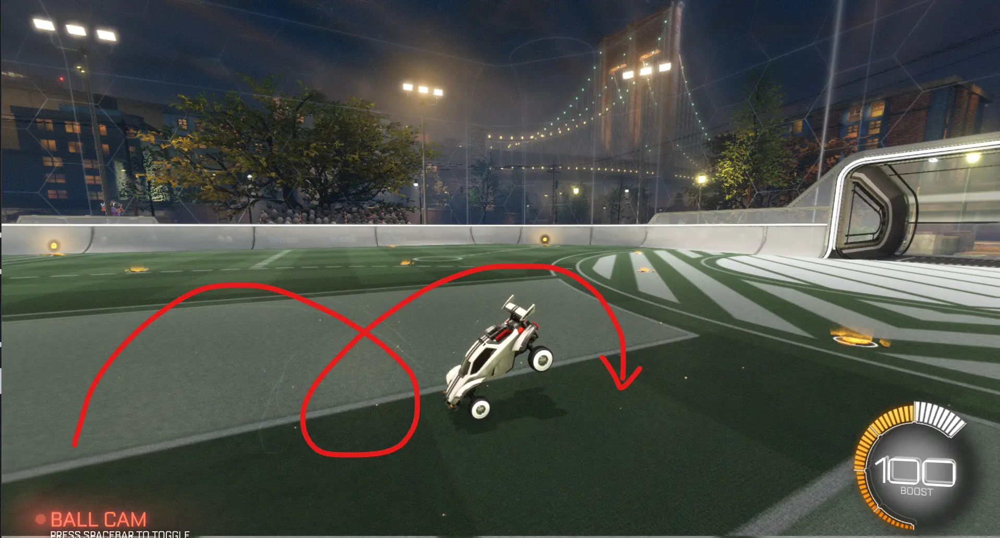
Sideflip vlevo
PC: A+Dvojklik PM
Ovladač: Joystick 270°+Dvojklik X
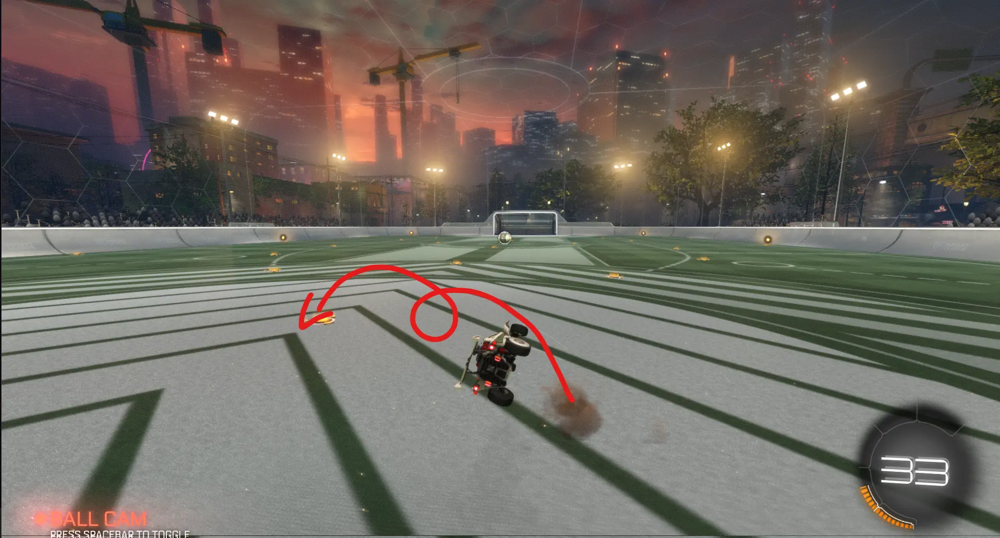
Sideflip vpravo
PC: D+Dvojklik PM
Ovladač: Joystick 90°+Dvojklik X
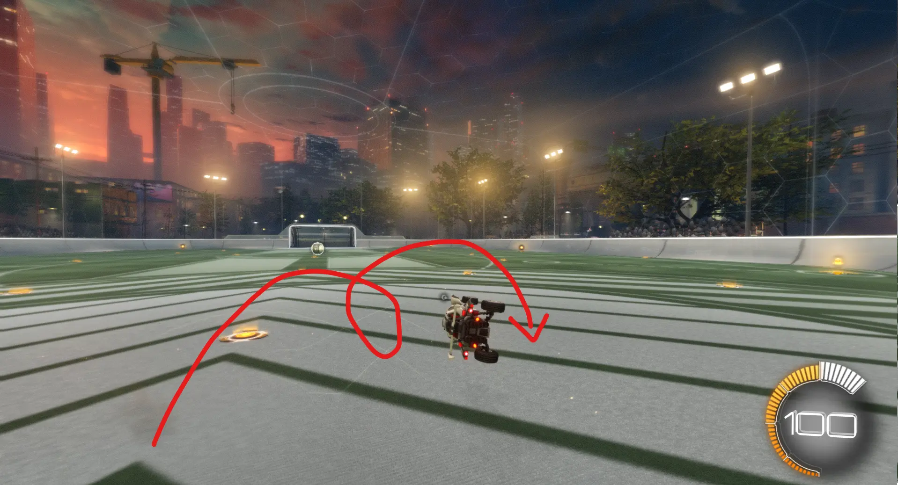
Diagonal flip je nejrychlejší způsob pohybu po mapě (ze základních mechanik, rychlejší je pouze speedflip)
Diagonalflip vpřed vlevo
PC: W+A+Dvojklik PM
Ovladač: R2+Joystick 270°+Dvojklik x
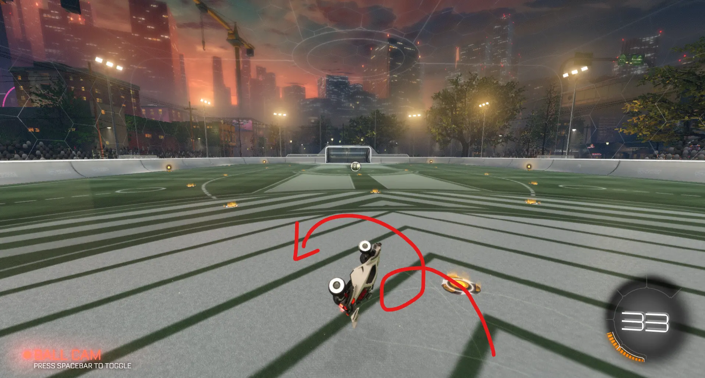
Diagonalflip vpřed vpravo
PC: W+D+Dvojklik PM
Ovladač: R2+Joystick 90°+Dvojklik X
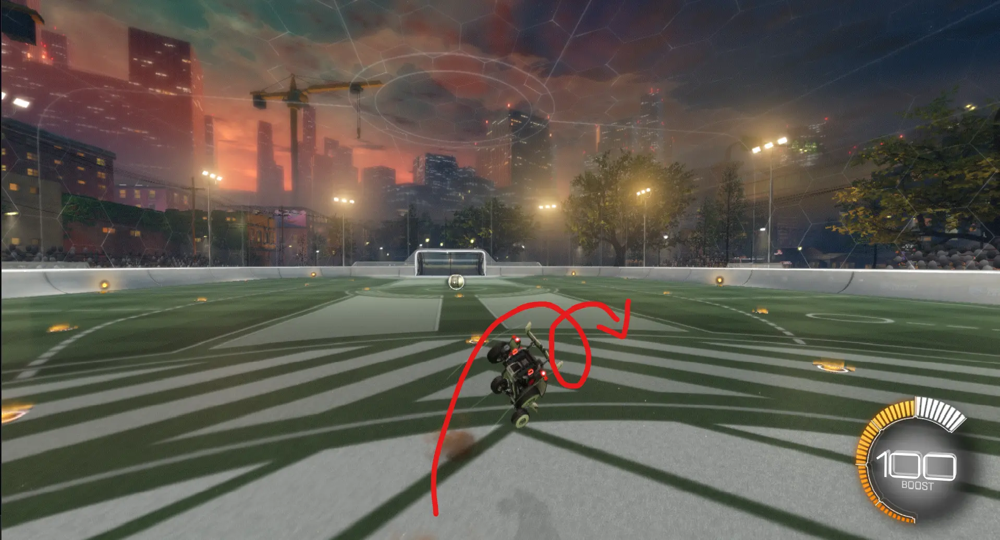
Diagonalflip vzad vlevo
PC: S+A+Dvojklik PM
Ovladač: L2+Joystick 225°
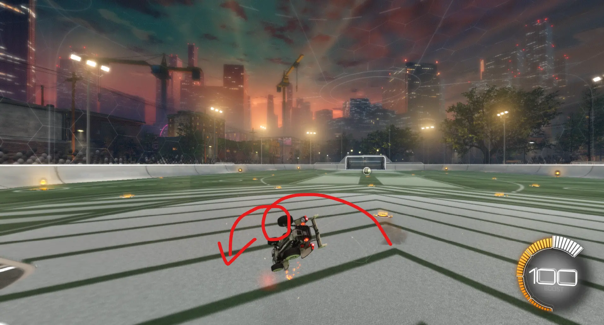
Diagonalflip vzad vpravo
PC: S+D+Dvojklik PM
Ovladač: L2+Joystick 90°
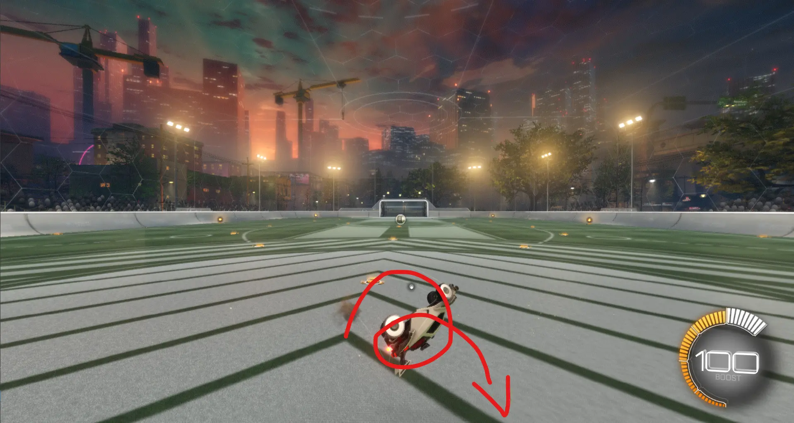